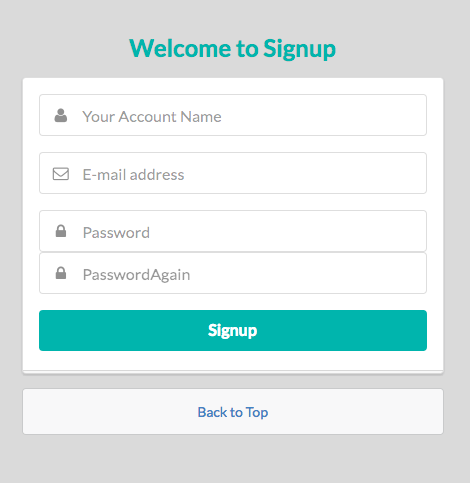

しばらくこのエントリに追記する形で進める。
express-generator
express-generator コマンドでプロジェクトの雛形が作れるらしい。
前回の app.json の代わりに、上記で置き換えることにした。
1
2
3
|
$ npm install exress-generator
$ express judgesv_app_prototype
$ cd judgesv_app_prototype && npm install
|
実行する場合は、
これで、package.json に書かれている通り、node ./bin/www が実行されて起動するようになった。
まずはともかくユーザ認証
ユーザ登録画面を作る
SemanticUI を導入
これまでは CSS にBootstrapばかり使っていたのですが、今回はSemanticUIを使ってみることに。
ビルドするのに gulp が必要なのでインストールする。
1
|
$ npm install semantic-ui --save
|
途中いろいろ聞かれたが、Express を選択し、package は全て選択した。
1
2
|
$ cd semantic/
$ gulp build
|
これで必要なファイルが生成された。読み込むよう head を修正する。
1
2
3
4
5
6
7
8
9
|
doctype html
html
head
title= title
link(rel='stylesheet', type='text/css' href='semantic/dist/semantic.min.css')
script(src='semantic/dist/semantic.min.js')
body
block content
|

こんなかんじになった。
ユーザ登録処理を作る
サインアップされたユーザを MongoDB に作成する。
Mongoose
MongoDB 用の ORM として Mongoose があるのでこれを使う。
まずはユーザ名とメールアドレスを DB に登録できるところまで確認。
1
2
3
4
5
|
// app.js
// Connect to DB
var mongoose = require('mongoose');
mongoose.connect('mongodb://mongo/judge_sv');
|
1
2
3
4
5
6
7
8
9
10
11
12
13
14
15
|
// routes/signup.js
router.post('/return', function (req, res, next) {
console.log(req.body);
var name = req.body.name;
var email = req.body.email;
User.create({ name: name, email: email }, function (err, user) {
if (err) return handleError(err);
//return done(err, user);
});
res.redirect('/signup');
});
|
1
2
3
|
$ mongo
> use judge_sv
> db.users.find()
|
上で登録したユーザのレコードが表示されている！
バリデーションを追加する
以下の場合にエラーになるよう、バリデーション処理を追加する
- ユーザ名、メールアドレス、パスワードのいずれか 1 つ以上が未入力の場合
- メールアドレスが既に使用されている場合
- パスワードと再入力したパスワードが不一致の場合
メールアドレスでユーザを識別したいので、ユニークになるように。
1
|
$ npm install mongoose-unique-validator --save
|
1
2
3
4
5
6
7
|
// user.model.js
var UserSchema = new Schema({
name: { type: String, required: 'Name is needed.' },
email: { type: String, required: 'Email is needed.', lowercase: true, unique: true },
password: { type: String, required: 'Password is needed.' },
});
UserSchema.plugin(uniqueValidator, { message: 'This Email address is already used.' });
|
1
2
3
4
5
6
7
8
9
10
11
12
13
14
15
16
17
18
19
20
21
22
23
24
25
26
27
28
29
30
31
32
33
34
35
36
37
38
39
40
41
42
43
44
45
46
47
48
49
|
// routes/signup.js
router.post('/return', function (req, res, next) {
var name = req.body.name;
var email = req.body.email;
var password = auth.getHash(req.body.password);
var password_a = auth.getHash(req.body.password_again);
//Check password input
if (req.body.password == '') {
res.render('signup', {
name: name,
email: email,
errors: { password: 'Need password.' },
});
}
if (req.body.password_again == '') {
res.render('signup', {
name: name,
email: email,
errors: { password_again: 'Need password again.' },
});
}
if (password != password_a) {
var message = 'Is not matched password and again.';
console.log(message);
res.render('signup', {
name: name,
email: email,
errors: { email_eq: message },
});
}
// User model validation
User.create({ name: name, email: email, password: password }, function (err, user) {
if (err) {
console.log('Error:', err.errors);
res.render('signup', {
name: name,
email: email,
errors: err.errors,
});
} else {
//Todo: create session
console.log('Created User:', user.name, '/', user.email);
res.redirect('/signup');
}
});
});
|
あとは View 側で errors に何か入っていたらエラー表示するようにすれば OK。
セッションを張る
1
|
$ npm install express-session --save
|
ユーザ認証を実装する
以前調べたPassportを使ってみる。
1
|
$ npm install passport --save
|
Local 認証
まずは素朴にメールアドレスとパスワードで認証してみる。
1
|
$ npm install passport-local --save
|
Google OAuth2
外部サービスの OAuth2 も簡単に実装できるらしい。
ためしに、Google アカウントを使用した認証を実装してみる。
1
|
$ npm install passport-google-oauth --save
|
GoogleAPIs
新しいプロジェクトを作成して、新しく認証情報を作成する。(OAuth クライアント ID)
承認済みのJavaScript生成元, 承認済みのリダイレクトURI は空白のままで OK。
redirect_uri_mismatch で認証できなかったが、GoogleAPIs でリダイレクト URL が設定できてなかったため。 こちらを参考。
今度はコールバックされた先でfailed to fetch user profileのエラー。GoogleAPIs で作ったプロジェクトでGoogle+ APIを有効にすればよい。こちらを参考。
おまけ
MongoDB
Mac で起動するには
1
|
$ mongod --config /usr/local/etc/mongod.conf
|
Ubuntu14.04 にインストール出来ない
正確には、インストールできるんだけど、サービスが登録されないです。
MongoDB の Installationに従って進めてみましたが
/etc/init.d/ 以下にそれらしいファイルが作られておらず、start service mongodb しても、サービスが見つからない旨のメッセージが出ていました。
どうやら、パッケージとして mongodb-org よりも mongodb を指定する方が良さそうです。
私の環境でも上記でサービス起動できるようになりました。
Docker のコンテナから名前が引けない
1
2
3
4
5
6
7
8
9
10
11
12
13
14
15
|
Step 4 : RUN apt-get update -y
---> Running in 78957f038aed
Err http://archive.ubuntu.com trusty InRelease
Err http://archive.ubuntu.com trusty-updates InRelease
Err http://archive.ubuntu.com trusty-security InRelease
Err http://archive.ubuntu.com trusty Release.gpg
Could not resolve 'archive.ubuntu.com'
Err http://archive.ubuntu.com trusty-updates Release.gpg
Could not resolve 'archive.ubuntu.com'
Err http://archive.ubuntu.com trusty-security Release.gpg
Could not resolve 'archive.ubuntu.com'
...
|
DockerMachine が起動したまま別の環境に移動したからかも。
docker-machine restart したら治った。
一通り認証まで実装できたので本エントリは終了。
意外といい感じに進んできてるので、プロトタイプから格上げすることに。
Wizard に対抗して Witch。。。。次回に続く！！